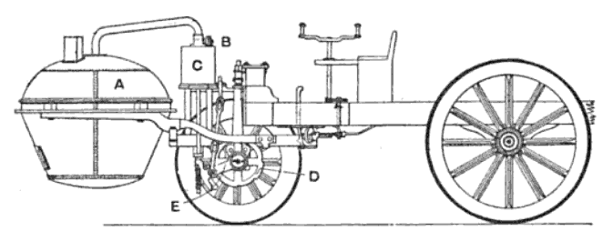

Phone +37477691820
Phone +37477691820
About
The early history of the automobile can be divided into a number of eras, based on the prevalent means of propulsion. Later periods were defined by trends in exterior styling, size, and utility preferences. In 1769 the first steam-powered automobile capable of human transportation was built by Nicolas-Joseph Cugnot. In 1808, François Isaac de Rivaz designed the first car powered by an internal combustion engine fueled by hydrogen. In 1870 Siegfried Marcus built the first gasoline powered combustion engine, which he placed on a pushcart, building four progress ively sophisticated combustion-engine cars over a 10-to-15-year span that influenced later cars. Marcus created the two-cycle comb ustion engine[citation needed]. The car's second incarnation in 1880 introduced a four-cycle, gasoline-powered engine, an ingeniou s carburetor design and magneto ignition. He created an additional two models further refining his design with steering, a clutch and brakes. The four-stroke petrol (gasoline) internal combustion engine that still constitutes the most prevalent form of modern automotive p ropulsion was patented by Nikolaus Otto. The similar four-stroke diesel engine was invented by Rudolf Diesel. The hydrogen fuel cell, one of the technologies hailed as a replacement for gasoline as an energy source for cars, was discovered in principle by Christian Friedrich Schönbein in 1838. The battery electric car owes its beginnings to Ányos Jedlik, one of the inventors of the electric motor, and Gaston Planté, who invented the lead-acid battery in 1859.[citation needed] In 1885, Karl Benz developed a petrol or gasoline powered automobile.This is also considered to be the first "production" vehicle as 